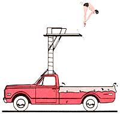

COUNTRY LORE
Our clever readers make the most of those lazy, hazy days.
MY HUSBAND CAME UP WITH AN easy way to help our youngsters cool off on hot summer days. He bought a big blue tarp at the hardware store-one that's large enough to cover the floor and overlap the sides of our pickup truck's bed. He filled it with water, and now our kids have a pool with built-in seats (the wheel wells). We can empty it by just letting down the tailgate. As a bonus I can use the "tarpool" to give my sheep their twice-yearly footbath, loading them into the pickup before adding a few inches of water. I put in a measured amount of zinc and let the sheep stand in the solution for an hour.
-Tami Piccolo
Estacada, Oregon
We use two-inch-diameter PVC pipe to stake our tomatoes. We buy sections six or seven feet long, cut with a taper at the bottom so they can more easily be driven about a foot into the ground. Every fall we pull them out, wash them off and store them in a dry place, and we feel they'll last just about forever. Though we haven't tried it yet, we're considering placing a wide-mouthed funnel in the top of each pipe to direct additional rainwater to the roots.
-Mack and Wanda Jones
Bon Aqua, Tennessee
Whenever the rack on our barbecue grill gets crusted over, I just pop it into a large plastic trash bag (this all takes place outdoors), add a cup of ammonia and tie the bag tightly shut. A few shakes distributes the ammonia over the grill, and then I let it sit overnight. The next day I rip open the bag and spray the rack with the hose. It seldom needs any more cleaning than this. The process works just as well on my oven racks.
-Letitia J. Schad
Dugger, Indiana
Here's my solution to an onslaught of slugs. Border the whole perimeter of your garden with 2 X 6s laid on edge. Then get enough 23-gauge wire mesh so that, when cut in four-inch-wide strips, it can be nailed along the entire length of the top edge of the lumber. Tack the mesh so that three inches hangs over toward the outside of the garden, and bend the outer two inches down at a 45° angle. Slugs cannot (or will not) maneuver past this obstacle.
-Bob Windom
Issaquah, Washington
Though a friend of mine bordered his garden with a six-foot fence,
-Leslie Newberry Grand Ronde, Oregon
When I hike to a favorite fishing spot, a homemade staff helps me over the rough spots. It's made from one-inch-diameter PVC; an elbow forms the handle and a plastic cap seals the foot. Inside I can store my fishing rod as well as a map and other small gear.
I coat my plastic fishing worms with baby oil to preserve them. Mixing a few drops of vanilla or anise in with the oil covers any human scent and evidently makes the worms smell particularly attractive to fish. This bait serves another function: I plug small leaks in my waders by using a lighted match to melt the end of a worm and smearing the hot plastic into the hole. The substance hardens in just a few seconds.
Pork rind on a lure can be great bait, but mine always used to slip off the hook. No more. It's kept in place by sliding a little square cut from a large rubber band onto the hook once the pork is rigged.
My favorite tip is for when the fish are cleaned and ready to cook. After placing salt, pepper and onion slices in the cavity, I wrap each fish in wet brown paper and then in foil. I put the packets on hot coals for half an hour, turning them once; the result is delicious, smoke-flavored fish.
-Fred A. Race
Euclid, Ohio
Did you know that tomato hornworms, which are almost invisible on green leaves, glow white in ultraviolet light? I've rigged up a fluorescent black-light bulb on a long extension cord that I take with me to the garden. It makes it easy to find and handpick the hornworms.
-Richard Buss
Pine Grove, California
Some toothpaste rubbed on wet hands, followed by a soap-and-water washing, removes the strong odor that clings to your hands after handling a stringer of fish.
-Rich Clinton
Pinedale, Wyoming
I place pieces of aluminum foil over the surface of my potted houseplants, and my cats no longer dig in the soil or use it for a litter box.
-Mrs. M. Janoche
Jackson, New Jersey
Don't throw away your garden hose because it has a few leaks. Make additional holes with an ice pick, and use the hose as a soaker.
-Shirley A. Dodson
Clear Lake, California
If you're planning to freeze fresh fish, remember that they'll stay fresh tasting longer if covered with water when frozen.
-Margaret Shauers
Great Bend, Kansas
During the summer, I keep a supply of plastic milk jugs three-fourths full of water in the freezer. On hot days, a couple of jugs placed in front of a fan help me stay comfortable.
-Carol Cunningham
Oakland, Maryland
Jugs of frozen water placed in our rabbit cages keep the bunnies cool in sweltering weather. -Diane Lumbert
Williamsport, Ohio
A dab of toothpaste (not gel) gives instant relief for blackfly and mosquito bites.
-Linda Hunkins
Saranac Lake, New York
Rubbing petroleum jelly on the wire from which a hummingbird feeder hangs will keep ants from swarming over the feeder.
-Lynda Thomas
San Antonio, Texas
Old T-shirts (of any size) hung on hangers in my cherry trees kept the birds from claiming the harvest.
-Linda Fletcher
Ogden, Utah
To save wear and tear (literally!) on my hands, I use pliers to pull up prickly weeds and carry them to the compost heap.
-Peggy Williamson
Pasco, Washington
To avoid using chemicals to get rid of lice on my chickens, I tried dumping last winter's fireplace ashes into the coop. The hens immediately began dusting themselves with the ash and seemed to get relief right away. Now I do this regularly, and the parasites are no longer a problem.
-Nona Perez
Calistoga, California
Through the years we've all discovered a few practical, time-tested solutions to some of the frustrating little problems of everyday life. Send your own suggestions to Country Lore, Mother Earth News, P.O. Box 70, Hendersonville, NC 28793. Each contributor whose tip is printed in this column will receive $20.
|
 |
|
|